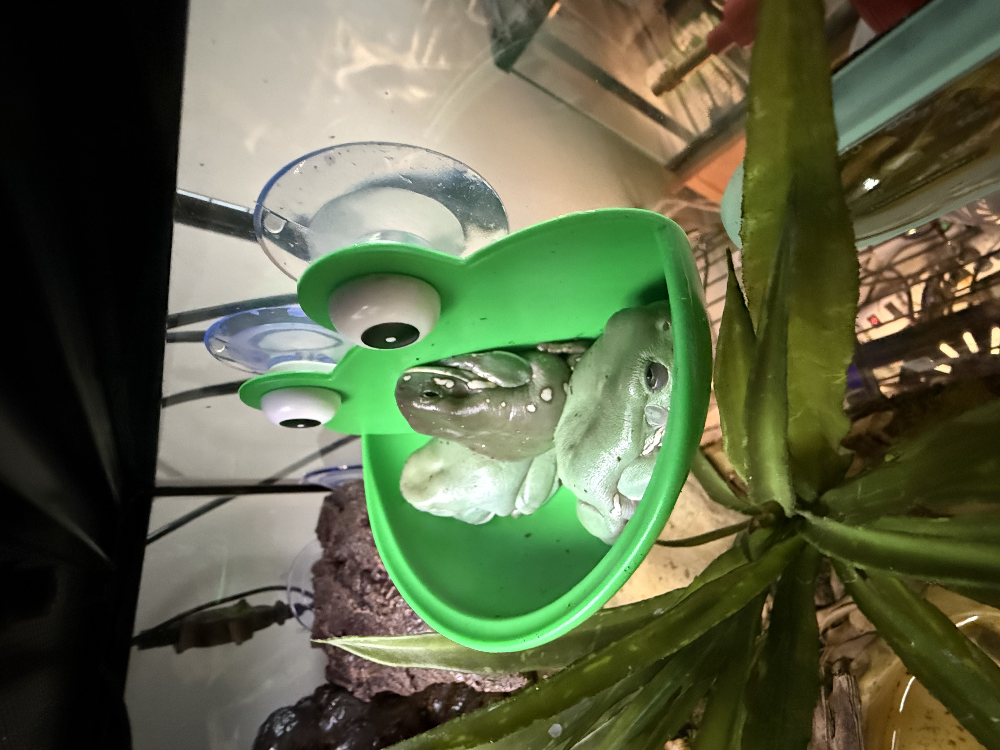

Royce Alton
Digital Design 2
Spring 2025

Hello my name is Royce Alton. I’m a student in the Design program at Western Washington University. Im currently interested in Branding, Illustration, Motion and a little bit of UX/UI. On the branding sides of things I love exploring textual and analog methods of making digital logos, and elements that can be used to create a brand identity. On the illustration sides of things, I really enjoy coming up with concepts and architectural landscapes usually in the fantasy ream. I also love keeping a sketchbook drawing all kinds of things. I have 4 frogs, Burger, Kermy, Bufo, and Pepe. and a leopard gecko, Bobcat. Outside of all that I'm into comics, movies, going on bike rides and skiing in the winter.